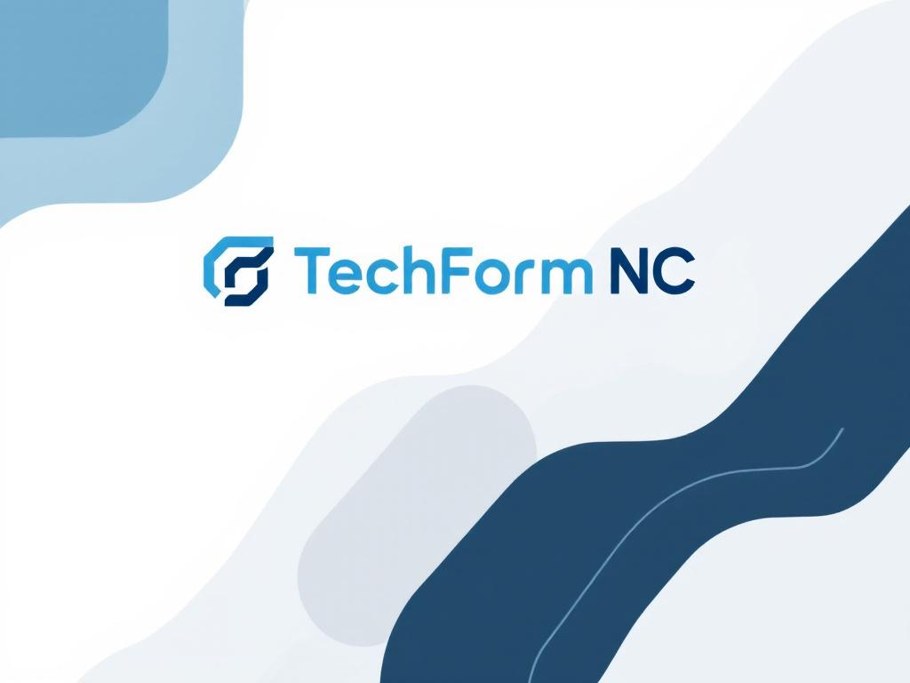

Voici une sélection de projets et réalisations qui montrent à la fois mes compétences techniques, mon esprit d'équipe et ma capacité à répondre à un objectif précis. Chaque projet est présenté avec un objectif clair et des points forts pour faciliter la lecture et renforcer l’impact de mon portfolio.
Projet scolaire
Le Pendu numérique
Conception et développement d’un jeu interactif pour la Semaine du numérique du lycée 2025. L’objectif était de créer un jeu pédagogique où le joueur doit deviner toutes les lettres du mot pour éviter d’être pendu.
- Technologies : HTML, CSS, Python
- Compétences : logique de programmation, interface utilisateur, gestion d’état

Valeur ajoutée : j’ai structuré un projet ludique qui permet de rendre l’apprentissage du code plus attrayant en associant une logique de jeu et une interface claire.
Projet alternance
Projet alternance
Projet mené pendant mes périodes en entreprise, conçu pour présenter et capitaliser les différentes missions réalisées au sein de mon alternance. Cela reflète mon implication opérationnelle et mes progrès en milieu professionnel.
- Objectif : valoriser les missions et compétences acquises
- Compétences : organisation, travail en autonomie, communication professionnelle
Image à insérer
Ce que j’ai appris : documenter mes missions et structurer un projet en alternance m’a aidé à mieux comprendre les attentes professionnelles et à présenter clairement mon rôle.
Entreprise - Fil rouge
TechForm NC
Réalisation collective avec la classe BTS SIO pour refondre l’infrastructure réseau de TechForm NC. En tant qu’élève de la spécialité SISR, mon équipe et moi avons mettons en place un HIDS pour surveiller et sécuriser l’ensemble du réseau.
- Objectif : reconstruire un réseau fiable et détecter les intrusions
- Compétences : architecture réseau, analyse, documentation et organisation Scrum

Points forts : ce projet met en valeur ma maîtrise des réseaux, ma capacité à travailler en équipe et mon expérience de méthode Scrum pour livrer une solution sécurisée et documentée.
Réalisation collective
Créathlon 2025
Création d’une mini start-up sur le thème de l’Économie Sociale et Solidaire dans les îles. Le travail a porté sur un concept de service viable, un pitch convaincant et la préparation d’une présentation devant un jury.
- Objectif : répondre aux besoins du jury avec une idée structurée et impactante
- Compétences : travail d’équipe, argumentation, éloquence

Impact : cette réalisation montre ma capacité à transformer une idée en projet concret et à convaincre un public grâce à un pitch structuré.
Compétition
Hackagou 2025
Participation à un CTF (Capture The Flag) avec ma classe autour du thème « Apocalypse : une IA devenue folle menace l’humanité ». Cette compétition de cybersécurité a renforcé mon sens de l’analyse et ma résistance à la pression.
- Objectif : résoudre des challenges de cybersécurité en équipe
- Compétences : sécurité, collaboration, résolution de problèmes

Résultat : j’ai développé une approche méthodique face aux défis techniques complexes tout en travaillant avec mes camarades sous contrainte de temps.